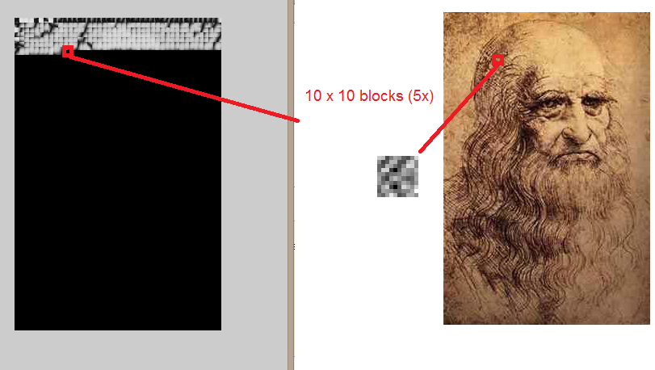
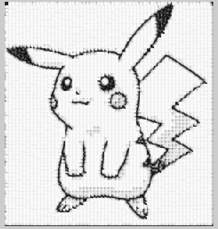
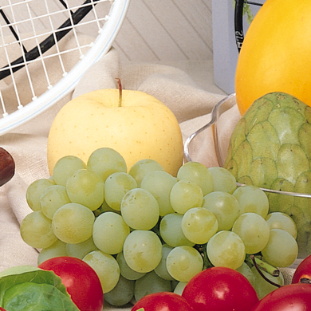
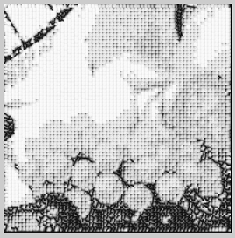
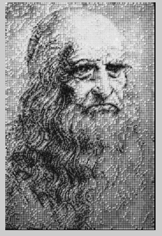

Part I. Algorithms & Implementation
First we have two for loop. The first For loop is 1 to target image height,the increment is (szPatch-szOverlap) . The second For loop is 1 to target image width,the increment is also (szPatch-szOverlap). For example, if we want to output a 300 x 240 image,szPatch = 10,szOverlap = 4,we will run the for loop 50*40 = 2000 times. That mean 2000 Blocks will form the quilting.
Calculate the error between the blocks and overlapped region. Then we can find the least error with specific blocks.
For texture synthesize, the output image block is equal to the least error block. Then start a new search until the for loop finish.
For texture tranfser, the output image block is compare to that targetImg block.

In the above image, the result block form the target image.
I opened a new result variable to save the least error block is each step and output this finally, so the result image will not have any target image elements in it.
Part II. Result
inputImg =  (szPatch = 10 and szOverlap = 4)
(szPatch = 10 and szOverlap = 4)
(szPatch = 10 and szOverlap = 4) | targetImg | Synthesis result | Texture result |
|---|---|---|
 |
More texture result.
| targetImg | Texture result |
|---|---|
|  | |
|  |  |
inputImg = (szPatch = 10 and szOverlap = 4)
| targetImg | Synthesis result | Texture result |
|---|---|---|
|
Part III. Discussion
My algorithms didn't implement minimum error boundary cut (don't know how to write it), so the synthesis result can become better.
Time needed: To run inputImg = texture.jpg and targetImg = leonardo.jpg, the time needed is ~0.9 seconds.
Part IV. Discussion on szPatch and overlap
inputImg = texture.jpg and targetImg = leonardo.jpg,
For szPath = 20 and overlap = 8 (double from default), the result is unreadable.

For szPath = 15 and overlap = 4 (1.5x from default), the result still hard to read but can see the shape.
For szPath = 5 and overlap = 2 (0.5x from default), the result is nearly similar to target image but it need much more time to run and this image is not like Texture tranfer-ed, because people can't see the pattern from input image.

Part V. Reference
[1] "Image Quilting for Texture Synthesis and Transfer" by Alexei A. Efros and William T. Freeman from http://graphics.cs.cmu.edu/people/efros/research/quilting/quilting.pdf
[2] Image Quilting/Texture Synthesize by Li Cheng from
http://www.mathworks.com/matlabcentral/fileexchange/35828--siggraph2002--image-quilting-texture-synthesize
[2] Image Quilting/Texture Synthesize by Li Cheng from
http://www.mathworks.com/matlabcentral/fileexchange/35828--siggraph2002--image-quilting-texture-synthesize